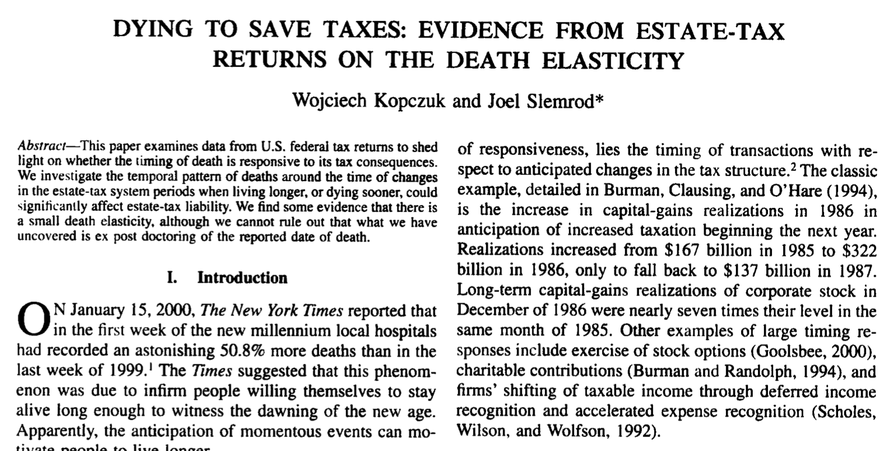

RSC Economics Experience · July 2026
Meng Hsuan “Rex” Hsieh
Press → to begin
Agenda for Today
Part 1
Press ↓ to continue
Interventions · Rationale
A competitive market is efficient only when a big assumption holds: no market failures. This deck examines the two that break it:
When either assumption fails, the market misfires on its own — and government intervention may be economically justified.
Interventions · Price Controls
At any binding price control, the quantity actually transacted is always the minimum of \( Q_s \) and \( Q_d \).
Interventions · Price Floor
A minimum wage of $15 sits above the $12 market wage. Don’t compute it — read the graph. Press →.
Interventions · Price Ceiling
San Francisco caps rent at $1,500, below the $2,000 market rent. Don’t compute it — read the graph. Press →.
Interventions · Price Controls Recap
A ceiling below equilibrium opens a shortage; a floor above it opens a surplus. Either way the quantity traded is the short side. Press →.
Interventions · Taxes
How do taxes affect market outcomes?
Interventions · Taxes
A market at equilibrium \( (Q^* = 40,\ P^* = \$3) \) meets a big \( \$3 \) per-unit tax — drawn large (not to scale) so every piece shows. Press → to add each piece.
Tax wedge \( t = P_b - P_s \) ⇒ quantity falls ⇒ the trades between \( Q_{\text{tax}} \) and \( Q^* \) vanish. That lost surplus is the DWL triangle.
Interventions · Taxes
Interventions · Tax Example
Interventions · Tax Burden
Identical market and identical tax \( t \) — only the elasticity of demand differs. Press → for the wedge, the burden split, then the DWL.
Interventions · Taxes
Interventions · Taxes

Interventions · Taxes
The U.S. taxes couples jointly, on a progressive schedule — so marriage itself moves your tax bill:
The tax code is not neutral to marriage — it quietly rewards some couples and penalizes others.
Group Work · Interventions
Look back at the two panels we just built: Market A has steep (inelastic) demand; Market B has flat (elastic) demand. The same per-unit tax \( t \) hits both — no algebra, just reason from the graphs.
Group Work · Answers
Part 2
Why the market won’t give you clean air. Press ↓
Bridge · Back to Welfare
The Air We Breathe
Because no one can be stopped from breathing it, and one person’s breath leaves just as much for everyone else, clean air is a public good.
Public Goods · Property 1 of 2
Public Goods · Property 2 of 2
Definition · The Big Picture
Cross “can you exclude non-payers?” with “does one person’s use crowd out another’s?” Press →.
The Core Problem
Follow the logic a would-be producer of clean air faces. Press →.
Society valued clean air enormously, yet the market makes almost none — all those unrealized gains from trade are lost. That missing surplus is a deadweight loss: the free market never reaches the efficient quantity.
Externalities
The flip side of clean air. Press →.
Clean air is under-provided; dirty air is over-produced. Both leave a deadweight loss.
Externalities · Back to Welfare
Start from the market’s own \( CS + PS \), then add the smoke society actually pays for. Press →.
Externalities · Positive
Start from the market’s own \( CS + PS \), then add the protection society gets for free. Press →.
Externalities · The Rule
An externality drives a wedge between private value (what the decision-maker feels) and social value (what everyone feels). Two cases:
e.g. a steel mill dumping waste into a river.
e.g. a flu shot that also protects classmates.
Externalities · The Fix
Make the decision-maker face the true social cost or benefit — that pushes the traded quantity to \( Q^* \):
Fixes over-production (steel, pollution).
Fixes under-production (flu shots, education).
Why It Matters
Left to prices alone, the market misses both ways:
Synthesis
One yardstick has run through Classes 5–6 — total surplus (welfare):
| Setting | What happens to welfare |
|---|---|
| Perfect competition | Maximized — efficient |
| Monopoly / market power | Deadweight loss \( (P > MC) \) |
| Taxes & price controls | DWL when markets are already efficient |
| Public goods | Under-provided → lost surplus |
| Negative externalities | Over-produced → deadweight loss |
| Positive externalities | Under-produced → lost surplus |
Quick Check
For each, ask: can you exclude non-payers? Is it rival?
Quick Check
For each: positive or negative externality? Does the market make too much or too little? Which curve moves — \( MSC \) or \( MSB \)?
Rule of thumb: the social curve always sits above the private one — cost side for negatives, benefit side for positives.
Summary
Press ↓ to continue
Summary
If competitive assumptions are met, market equilibrium is efficient:
Wrap-Up
This wraps up the first part of the course!
We have covered decision-making on the margin, supply and demand dynamics, elasticities, firm cost structures, monopoly, perfect competition, and welfare economics.
This means… something fun next Monday, and the Final Exam next Wednesday!
Wrap-Up · Final Exam
Post final exam, we’ll have a fun little discussion/wrap-up!
Thank You
Final Exam is next week.
Come to office hours w/ any questions or concerns.
See you next Monday at 9am sharp!